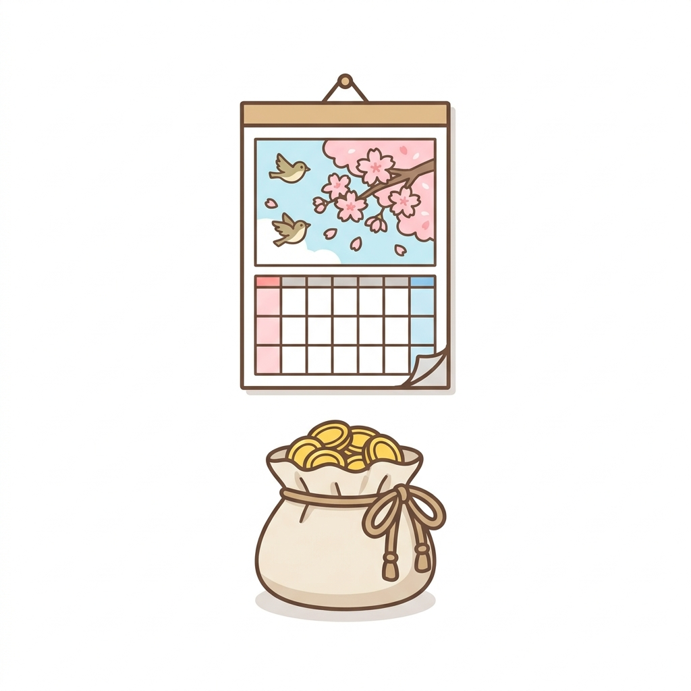

🎁 隠れ年金チェックシート（4つの該当チェック＋電話ひとこと台本）
よく来たな。約束の物を渡す。
動画の“隠れ年金”4つを、あなたの家に当てはめて確かめる紙1枚にまとめた。
当てはまる印が1つでも付いたら、下の「電話ひとこと台本」で今日確かめられる。
✅ 該当チェック早見（印を付けながら読んでほしい）
①「家族手当」の年金（加給年金）――2026年度・年423,700円（約42万円）
- □ 会社勤め（厚生年金）が合計20年以上ある
- □ 65歳になった時、年下の配偶者（または18歳の年度末までの子）を養っていた
- □ 配偶者の年収は850万円未満だった
→ 3つとも当てはまるのに記憶にない人は、電話で確認。
⚠️ 年金の受け取りを遅らせている（繰下げ待機中の）間は支払われない。あとから条件に当てはまった人は届出が必要。
②「妻へのバトン」の年金（振替加算）――これから65歳の人は年16,335円（一生涯）
- □ 妻（配偶者）が昭和41年4月1日以前の生まれ
- □ 夫婦のどちらかに①の「家族手当」が付いていた（または付く条件があった）
- □ 妻のほうが年上だ（→バトンは自動で渡らない。届出が必要）
- □ 夫婦のどちらかが公務員だった（→2017年に国の確認漏れ598億円が出たのは主にこの型）
→ 1つでも気になったら、電話で「振替加算が付いているか」を確認。
③「置き忘れ」の年金（企業年金連合会）――未請求106.1万人（2025年3月末・公表値）
- □ 若い頃、数年だけ勤めた会社がある
- □ 転職・引っ越し・名字の変化があった（案内が届かなくなる三大理由）
- □ 「厚生年金基金」という言葉に心当たりがある
→ この年金は時効で消えない。遅れても、さかのぼって全額受け取れる。調べるのはタダだ。
④「65歳前」の年金（特別支給の老齢厚生年金）――放置がいちばん危ない
- □ 女性で、昭和41年4月1日以前の生まれ（男性の新規対象は2026年度でほぼ終了）
- □ 会社勤め（厚生年金）が1年以上ある
- □ 「年金は65歳から」と思って、届いた請求書を放置したことがある
→ この年金は待っても増えない。さかのぼれるのは直近5年分まで＝それより前は時効で消える。
請求書は始まる年齢の3ヶ月前に日本年金機構から届く。「届いたら、放置しない」。
📞 電話ひとこと台本（このまま読めばよい）
かける前に基礎年金番号（年金手帳・ねんきん定期便に記載）を手元に。
| 確かめたいこと | かける先 | 最初のひとこと |
|---|---|---|
| ①家族手当・②バトン | ねんきんダイヤル 0570-05-1165 | 「加給年金と振替加算が付いているか、確認したいです」 |
| じっくり相談したい | 年金事務所の予約 0570-05-4890 | 「年金のもらい忘れがないか相談したいので、予約をお願いします」 |
| ③昔の会社の分 | 企業年金コールセンター 0570-02-2666 | 「企業年金の未請求がないか、調べてほしいです」（氏名・生年月日を伝える） |
⚠️ 0570は通話料がかかる。受付時間＝ねんきんダイヤル：月8:30-19:00／火〜金8:30-17:15／第2土曜9:30-16:00、予約：平日8:30-17:15、企業年金：平日9:00-17:00。
🎁 動画で話していない「5つ目の隠れ年金」（おまけ）

未支給年金――年金は「後払い」なので、受給者が亡くなると、亡くなった月の分までの年金が未払いのまま残る。
これは遺族が請求しないと支払われない（仕組み上、ほぼどの家にも1〜3ヶ月分は発生する）。
- 請求できる人＝亡くなった方と生計を同じくしていた遺族（配偶者→子→父母→孫…の順）
- 手続き＝年金事務所で「未支給年金の請求」（死亡の届出と一緒にできる）
- 期限＝5年。過ぎた分は時効で消える
家族を見送ったばかりの人は手続きどころではないものだ。だからこそ、元気なうちに家族で共有しておくのがこの紙の使い方だ。
⚠️ 本資料は教育目的の一般的な情報だ。金額は2026年度（令和8年度）の額で、受給の可否・金額・手続きは一人ひとりの加入記録・生年月日・生計関係で変わる（出典＝日本年金機構・厚生労働省・企業年金連合会の公表情報／2026年7月時点）。実際の該当判定と手続きは、上の公式窓口で必ず確かめてほしい。

年金は、確かめた者にだけ届く。次の贈り物も、このLINEで届ける。— フク先生（老後資金の止まり木）